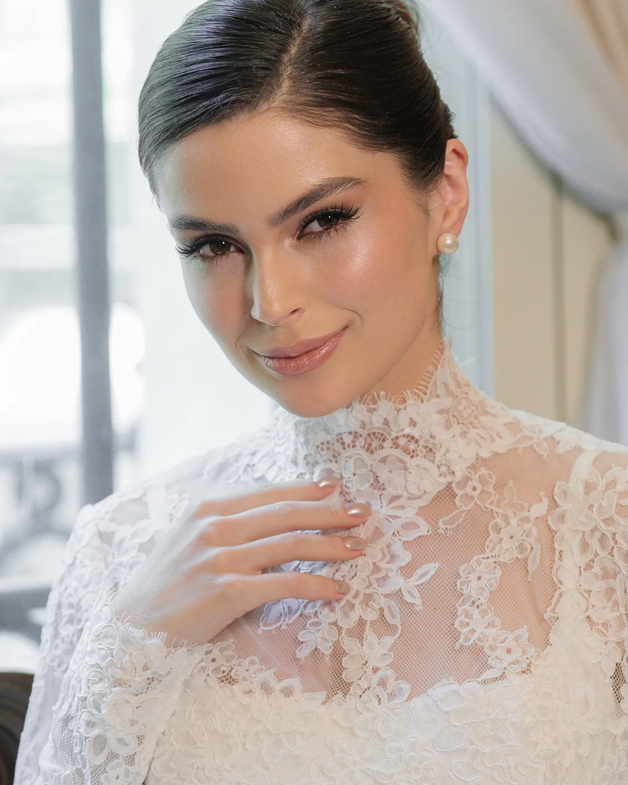
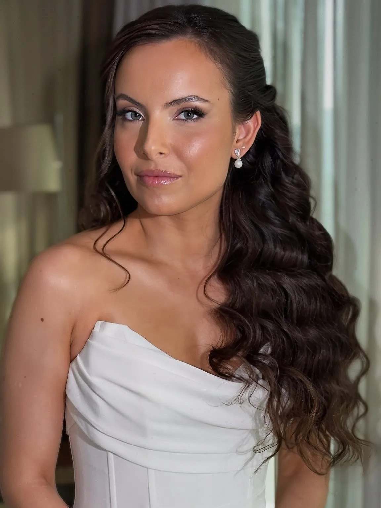
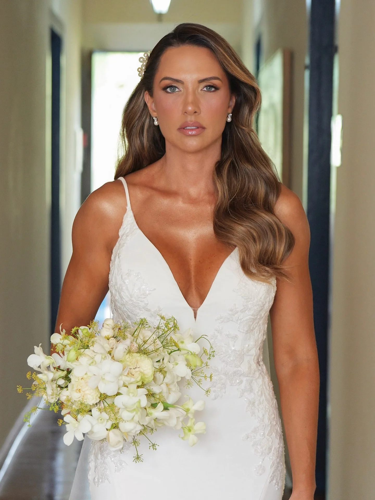
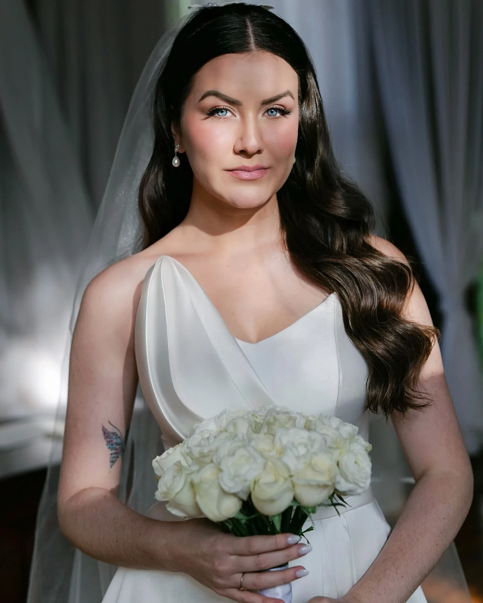
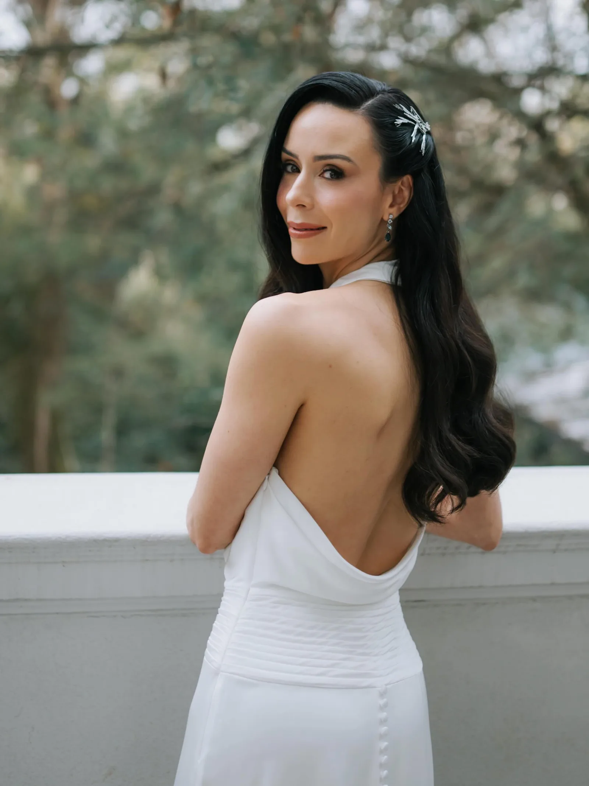
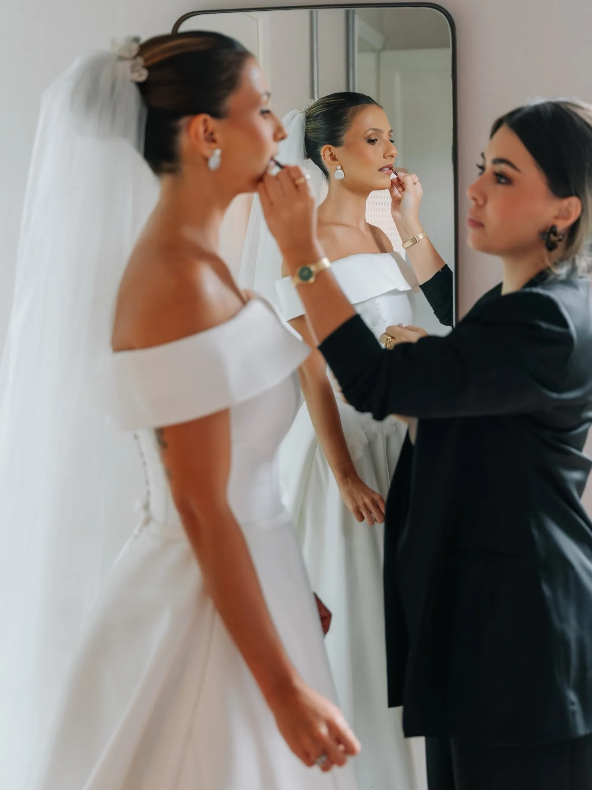
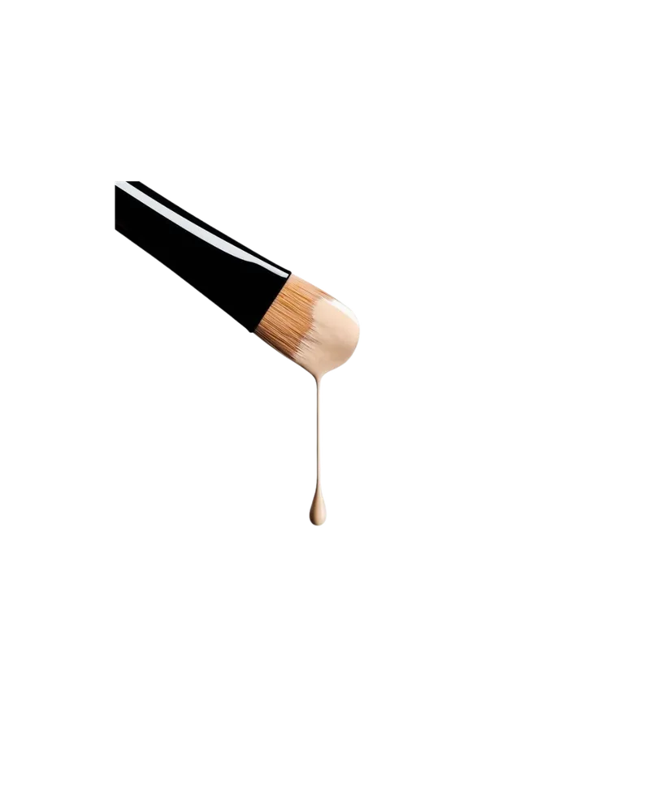
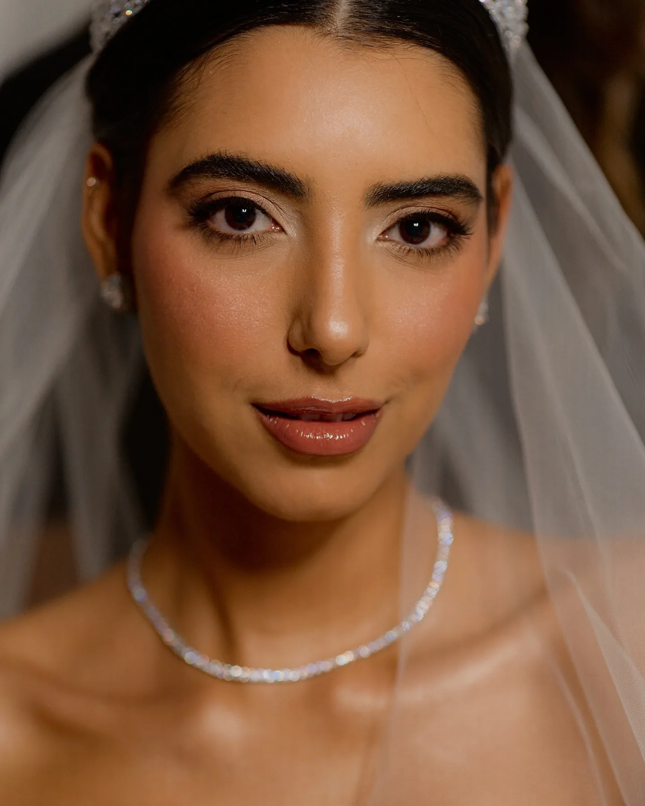
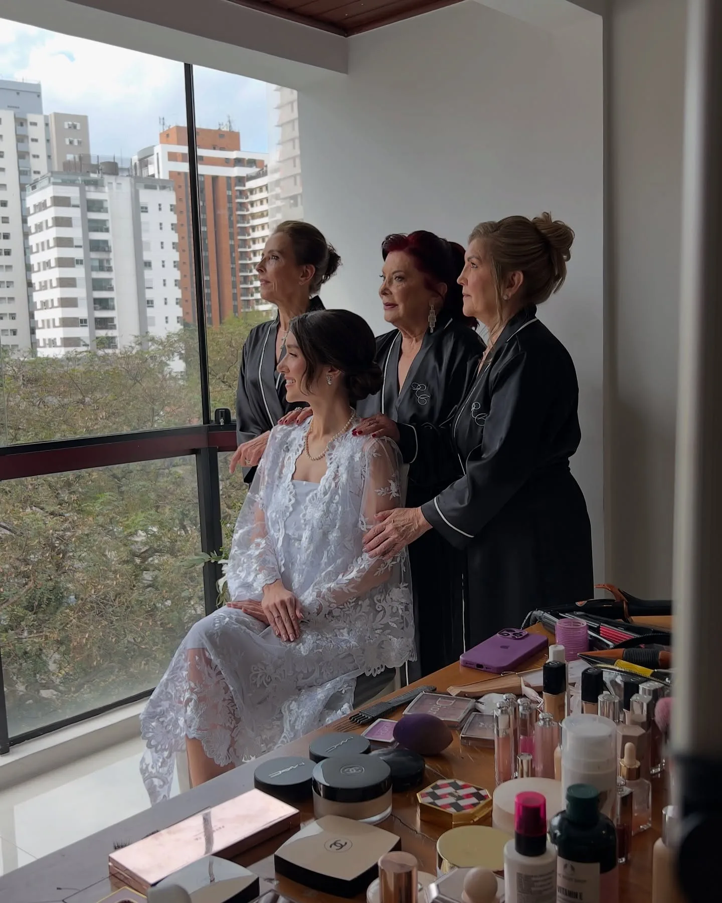

Débora Machado
Beauty Artist
Maquiagem e penteado de noiva · São Paulo e todo o Brasil
Consultar minha dataCasamentos assinados em
- Palácio Tangará
- Palácio dos Cedros
- Fazenda Fagundes
- Château La Villette
- Guia Constance Zahn
- Destination wedding

Tudo começa pelo seu rosto.
Você responde um questionário, me manda algumas fotos e eu faço a leitura do seu rosto, do seu tom e subtom de pele e do vestido que escolheu.
Só depois a gente decide a maquiagem e o penteado. Por isso nenhuma noiva minha sai igual à outra.


Nenhuma noiva minha sai igual à outra
Cada uma com o seu rosto. Mais no Instagram @deboramachadomake





Do civil ao destination wedding
Cada atendimento parte da mesma leitura: o seu rosto, a sua pele e o seu casamento.

Do planejamento ao altar
São cinco etapas. As três primeiras acontecem online, no seu tempo.

01
Análise
Você responde um questionário e me manda algumas fotos. Eu leio o seu rosto, o tom e o subtom da pele, o seu estilo e o vestido.
- 02
Planejamento
A gente define os caminhos pelo WhatsApp. Cada dúvida vem com o porquê da resposta.
- 03
Moodboard
Um painel com as técnicas de maquiagem e penteado, as cores e a indicação de brinco, véu e grinalda.
- 04
Teste presencial
A gente valida tudo no seu rosto. Ajusto o que precisar.
- 05
O grande dia
Você só precisa sentar e aproveitar.

Como isso fica na prática
Um pouco do que acontece nos bastidores.


Quem já passou por aqui
“O seu moodboard é surpreendente e muito certeiro, deu o toque final que faltava na minha produção. Com certeza você foi minha melhor escolha.”
“As meninas são excelentes, de verdade! Eu amei o meu penteado e a maquiagem. Durou até o dia seguinte! Um sonho mesmo.”
[CONFIRMAR: autorização da Mayra e da Priscilla, e mais um ou dois depoimentos]
Prazer, eu sou a Débora
Comecei na publicidade e na fotografia. Foi ali que aprendi a olhar pra composição, luz e enquadramento, e esse olhar veio comigo quando a beleza virou o meu trabalho.
Hoje sou especializada em visagismo e colorimetria, e cuido de noivas em São Paulo e em casamentos pelo Brasil. Teve muito tempo em que precisei acreditar no meu trabalho antes de ele ser reconhecido. Ele foi, e hoje faço parte do Guia Constance Zahn.
A Equipe DM é uma curadoria minha. Eu participo do planejamento, assino a beleza e dirijo o teste presencial. São mais de 10 profissionais, com backup para qualquer imprevisto e um cronograma detalhado para você planejar o dia. No dia, a equipe cuida de você com o meu olhar em cada detalhe. Conhecer a Equipe DM
O que não mudou: atendo uma noiva por dia, com atenção inteira pra ela. [CONFIRMAR: continua uma noiva por dia, com a Equipe DM?]
- Visagismoe colorimetria
- Uma noivapor dia
- Fotografiae publicidade, antes
- Constance ZahnBridal Guide
Ficou alguma dúvida?
Sua data ainda está livre?
Me conta quando e onde vai ser. Eu te respondo com a disponibilidade e te explico como funciona cada etapa.
com carinho, Débora